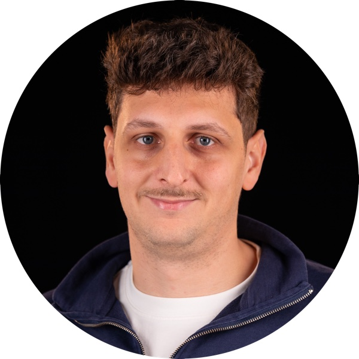

Maxime Di Folco, PhD
Assistant Professor in Computational Biomedical Imaging
Télécom Paris, Institut Polytechnique de Paris
I am an Assistant Professor (Maître de conférences) at Télécom Paris, working on multimodal artificial intelligence for robust clinical decision support. My research integrates medical imaging and clinical data, with applications in cardiology and breast cancer, aiming to make AI-based clinical models more reliable, generalisable and fair.
Before this, I was a postdoctoral researcher in cardiac imaging at Helmholtz Munich and the Technical University of Munich, in the group of Prof. Julia Schnabel, working on representation learning for cardiac imaging and multimodal data. I did my PhD at Université de Lyon (CREATIS) with Nicolas Duchateau and Patrick Clarysse, on manifold learning to model and analyse cardiac function.
I am happy to hear from students interested in a Master's thesis, PhD or postdoc. Write to me at maxime.difolco@telecom-paris.fr.

News
Recent articles
Research
I build machine learning methods that combine medical images with the clinical information that comes with them, so that models describe patients more completely and stay reliable when data is incomplete.
Full list of publications on Google Scholar.
Team
Join the team. I am looking for motivated students and researchers for Master's internships, PhD positions and postdocs in multimodal AI for medical imaging. Send your CV and a short description of your interests to maxime.difolco@telecom-paris.fr.